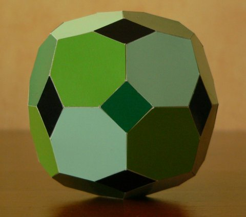
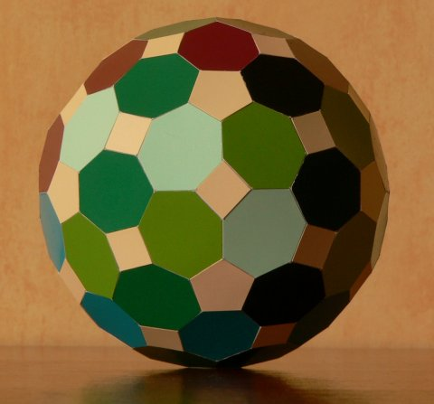
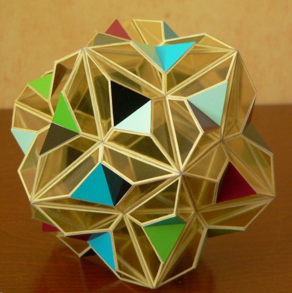
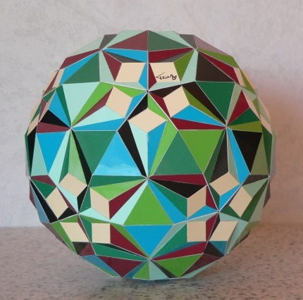

Polyhedra with regular 7-gons, i.e. heptagons, are special. It is difficult to find any polyhedra containing regular heptagons without allowing the other faces to become "too exotic", not taking into account cyclic or dihedral polyhedra with a 7-fold (principal) rotation axis. For instance none of the Johnson Solids have heptagons. I guess this has to do with the fact that other symmetries do not have a 7-fold axis and that 7 is prime. Here some polyhedra with regular heptagons can be found.
I guess that is why heptagons are a bit pushed out of attention, which that makes them even more fascinating I think and this is why I started to look for equilateral polyhedra that contain heptagons and that have a symmetry based on the tetrahedron, octahedron or icosahedron. On this page some results are showed.
The image shown above shows a polyhedron consisting of 12 equilateral heptagons and 16 equilateral triangles only. This means that the total amount of faces equals to 28, which is dividable by 7. I tried to emphasise this by using 4 colours, i.e. every colour is divided over 7 faces in a regular way. This means that this polyhedron has a stellation that is a compound of 4 (of the same) polyhedra that consist of 7 faces. This compound belongs to the same symmetry group and the constituents have C3 symmetry. It is difficult to get an overview of the polyhedron from just the picture. This VRML file gives a better understanding.
The above model has the same symmetry as a cube. It consists of 24 equilateral heptagons, 6 squares and 12 rhombs. As the previous one the total number of faces (42) is dividable by 7. The model in the image doesn't emphasise this, since I didn't think this would lead to an interesting colour arrangement . Instead I used a 5 colour arrangement, where all the rhombs get one colour and the remaining colours are divided equally over the rest of the faces. The image shows the model looking into a 4-fold axis, this image shows the model in a 2-fold axis and this image in a 3-fold axis.
The above model is similar to the previous one, except that it has the same symmetry as a dodecahedron. It consists of 60 equilateral heptagons, 12 regular pentagons and 30 rhombs. Unlike the previous polyhedra the total number of faces (102) is not dividable by 7, but the model in the image does use a 7 colour arragement. All rhombs and pentagons use one colour and the heptagons use the remaining 6 colours in such a way that 6 one-coloured rings of 10 heptagons are obtained. Each ring has its own 5-fold axis from the symmetry of the polyhedron. The image shows the model looking into a 2-fold axis, so that one can see that the rhombs look almost like squares. this image shows the model (more or less) in a 3-fold axis and this image (more or less) in a 5-fold axis. Hier is the model in moving action:

Even though the above model is not convex it is pretty similar to the first model. It has the same relationship with the Great Dodecahedron as the first model has with the Tetrahedron. It consists of 60 equilateral heptagons, 12 regular pentagons and 60 equilateral triangles. All pentagons are hidden inside the model and that is what made me decide to make the model with a transparent material. It is remarkable that the heptagons almost look like regular heptagons. After rounding the angles equal to: 129.89, 132.88, 125.54, 125.54, 132.88, 129.89, 123.39 degrees.
The image does not really give a good impression of the model itself; it is especially hard to see the complete heptagons. The best way to investigate it is by rolling it in your hand, so that heptagons can be recognised. For this reason I put a short film on YouTube.
The result is still not very satisfying, but it gives a least a better impression. Another way to investigate the polyhedron is by playing this VRML file. The model was built in three stages. This image shows the first stage, the second stage can be seen here and the above image shows the final stage.
The mode above is topologically equivalent to the previous one and it can be derived tilting the heptagons, while keeping the pentagons and triangles regular. The heptagons are tilted in such a way that the pentagons end up on the outside. As a result the dihedral angle between two neighbouring triangles becomes less than 180 degrees, while it was more than 180 degrees in the previous one.
2009-05-05
{kind=link}
{kind=link}
{kind=link}
{kind=link}
{kind=link}
{kind=link}